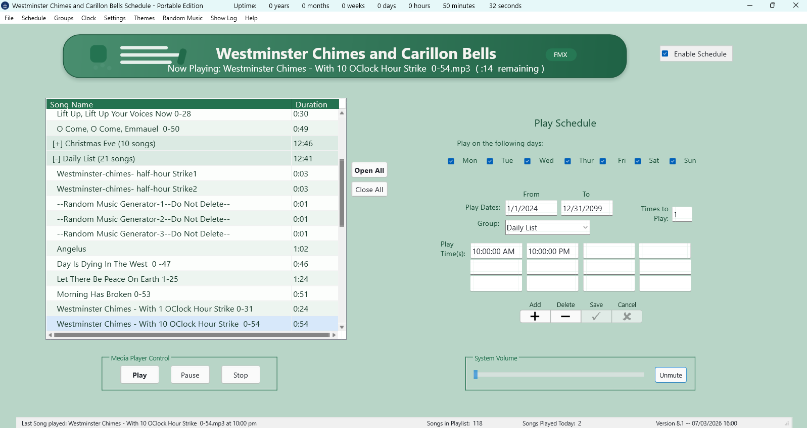

Main Screen Overview
The main screen is the daily operating screen. It shows the grouped song list, the schedule editor for the selected song, manual playback controls, the system volume control, the schedule status, and the main menu.

| Area | What it does |
|---|---|
| Application header | Shows the program title and the active visual theme. |
| Enable Schedule | Turns automatic scheduled playback on or off. |
| Playlist grid | Shows songs grouped by season or purpose, with song duration. |
| Open All / Close All | Expands or collapses all song groups in the grid. |
| Play Schedule panel | Edits dates, weekdays, group, play times, and repeat count for the selected song. |
| Navigator | Adds, deletes, saves, or cancels playlist edits. |
| Media Player Control | Manually plays, pauses, or stops the selected song. |
| System Volume | Controls the Windows system volume and mute state. |
| Status bar | Shows recent playback, song counts, and version/status information. |